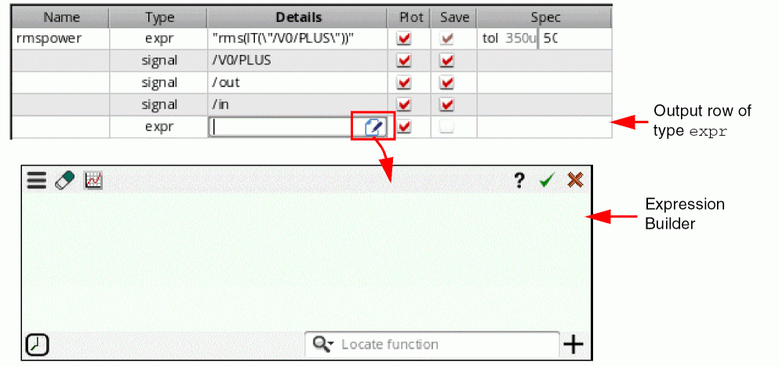
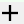
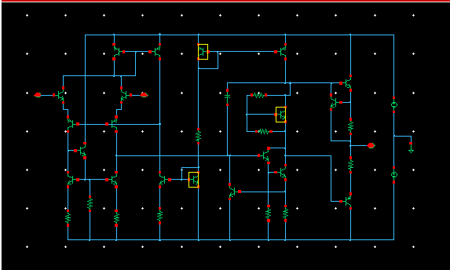
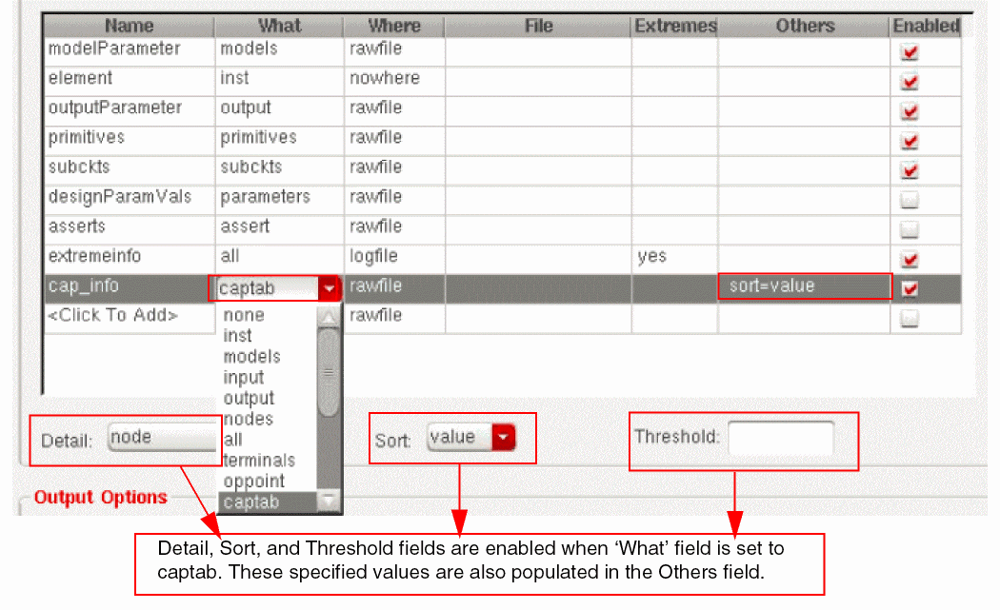

4
Specifying Output Data to be Saved or Plotted
This chapter covers the following topics to explain how to select data that you want to save or plot during a simulation run.
From the Outputs Setup tab of the Outputs pane, you can specify nets, terminals, and measurements you want to save and plot. You can save all node voltages and terminal currents or specify a set of voltages and currents you want to save. You can select output nodes and terminals on your schematic and build expressions using the Calculator to analyze or measure particular results.
Each item that appears on the Outputs Setup tab has a Plot check box and a Save check box. You can select the check box for those outputs you want to plot or save, or deselect the check boxes of those items you do not want to plot or save.
This chapter covers the following topics:
- Using the Outputs Setup Pane
- Type of Outputs to be Saved or Plotted
- Defining Specifications for an Output
- Importing and Exporting Outputs to a CSV File
- Specifying which Outputs to Save
- Specifying which Outputs to Save
- Expressions to be Measured Across Dimensions
- Environment Variables for PSFXL Output Format
Using the Outputs Setup Pane
The Outputs Setup pane appears to the right of the ADE Explorer window. You can use the this pane to add a new output signal/expression/OCEAN or MATLAB script or to change an existing output. This pane is blank when no outputs are specified.
Do the following to add a new output:
- Choose Outputs – Add – <Type of output>.
- On the Run toolbar, click the button. The list of outputs appears. Select the type of output you want to add.
The selected output type is added in a new row in the Outputs Setup pane. For example, if you add an output of type signal, the following row appears in the Outputs Setup pane. The Plot check box is selected by default.
Specifying Whether a Result is to be Saved or Plotted
You can specify whether an item will be saved to the results database or plotted in a waveform window on the Outputs Setup tab by selecting or deselecting the Plot or Save check box for the item. Selecting the Plot check box causes the selected item or items to appear in a waveform window at the end of the simulation.
(ADEXL-1617): Following tests do not have any outputs selected for plotting:
<testname1>
<testname2>
When the Plot and Save checkboxes are disabled for an output, the Value column for that output is blank.
When Plot is disabled and Save is enabled, a waveform icon is displayed in the Value column to indicate that the data is available and can be manually plotted. In this case, the signal is not plotted automatically after the simulation run is complete.
Type of Outputs to be Saved or Plotted
The outputs of type—Expression, Signal, OCEAN Script, MATLAB Script, Area Specification, Violation Filter and OP Parameters—that are added in the Output Setup pane are called measurements. The following figure shows the list of outputs that can be saved or plotted after a simulation is complete:
This section covers the following topics:
- Saving Output Expression
- Saving Output Signals
- Saving OCEAN or MATLAB Measurement
- Defining Specifications for an Output
- Saving Violation Filter
- Saving Operating Point Parameters
- Adding a User-Defined Column
- Renaming a User-Defined Column
- Deleting a User-Defined Column
Saving Output Expression
To add output expressions, click Expression from the drop-down list. A new row of type expr is added in the Outputs Setup tab.
- In the Name column, specify the name for the expression output.
- In the Details column, either directly type an output expression or click the button to open Expression Builder to add an output expression. For example, you can build an expression for the 3 dB point of an output signal as follows: bandwidth(VF("/OUT), 3, "low"). For more information about how to build expressions using Expression Builder, see Creating Expression Outputs Using the Expression Builder.
-
The expression appears in the Details field. If the expression uses a signal or net that does not already exist in the outputs table, a new row for an output of type
Implicitis added to the table. By default, implicit signals are not shown in the outputs table. To show these signals, set the environment variable displayImplicitSignals tot
As shown in the example below, when you createaverage(VT("/net06"))as an output expression, an implicit output is created for signal/net06.
To add the implicit signals to the outputs setup, set the Select signals to output (save) option on the Save options form to selected.
When the netlist is being created in the GUI, i.e. the ICRP mode, you can set the environment variable to t. This ensures that the implicit signals are added to the save statement in the netlist during the simulation run. However, those implicit signals will not be visible in the Outputs Setup or Results tab.
- Change the Plot and Save check boxes for the expression, if required.
-
To add more columns to the Outputs Setup pane for expression, right-click anywhere in the header and choose the column you want to add from the context-menu. By default, Name, Type, Details, Plot, Save, and Spec columns are displayed.
-
When you select to display the EvalType column, the default value displayed in this column is
point. This signifies that by default the expression are run for the given design point. If you want to evaluate the expression across corners, or across sweep points, or across all corners and sweep points, double-click in the EvalType cell and selectcorners,sweep, orallfrom the drop-down list.
When you set the EvalType to a value other than point, the color of the row is changed to blue. -
In the Value column, the value of each output type is displayed. The default value in this column is a blank string.The environment variable showUnitsInResults is used to control whether to show or hide the units, such as
HzordB, in the measured results or values for the expressions in the Results tab. - In the Spec and Weight columns next to the expression, define the specification and the weighting factor for the specification for the output expression.
-
In the Units column next to the expression, specify the unit value to be used for displaying the measured results for the expression in the Results tab of the Outputs pane.
For example, if you specify the unit value asdBfor an expression namedGain, the measured results for the expression is displayed with the unit valuedBin the Results tab of the Outputs pane. -
In the Digits column next to the expression, specify the number of significant digits in which the measured results for the expression needs to be displayed in the Results tab of the Outputs pane. Valid values are
2to15. -
Double-click in the Notation column next to the expression. From the drop-down list that appears, choose the notation style in which the measured results for the expression needs to be displayed in the Results tab of the Outputs pane.
For more information about how the integer and floating point division is performed using SKILL, see
Creating Dependent Expressions
You can create expressions based on other expressions. For example, assume that you have an expression named s1 with the value 5. If you want another expression, say, s2 to be ten times the value of s1, type s1*10 in the Details field as shown in the figure below.
Note the following when you create dependent expressions:
-
Expressions can be added in any order, irrespective of their dependencies. For example, if the expression
s2is based on expressions1, it is not necessary to add the expressions1before adding the expressions2. - An expression can be based on any number of other expressions.
-
Ensure that there is no cyclic dependency between the dependent expressions.
In the following example, a cyclic dependency exists because expressionmyExprdepends on expressionmyExpr1, and expressionmyExpr1also depends on expressionmyExpr.myExpr=myExpr1*5
myExpr1=myExpr+10
-
If the expression name that is being used in a dependent expression has special characters such as spaces or dot (.), use the \ character to escape these special character.Expression names can have special characters as they are valid string values. However, when these expression names are used in dependent expressions, they are treated as SKILL symbols and should be in a valid SKILL format. Therefore, special characters in such expression names should be escaped using the \ character.
-
It is not necessary to plot or save the expressions on which other expressions are based. For example, if the expression
s2is based on expressions1, it is not necessary to select the Plot or Save check box for the expressions1in the Outputs Setup tab. -
You cannot assign a name to an output of type signal and then use that name in a dependent expression. For example, you cannot assign the name
myVout2for theVout2signal as shown below, and then usemyVout2in a dependent expression.
If you want a dependent expression to be based on a signal, create an expression based on that signal and use the name of that expression in a dependent expression. For example, create an expression namedmyVout2Exprbased on the signalVout2and then usemyVout2Exprin a dependent expression. - Error messages, if any, regarding dependent expressions are displayed in the Command Interpreter Window (CIW).
Dependent expressions appear on the Results tab only if the Plot check box is checked. However, if you want to display of the results of intermediate expressions irrespective of the setting of the Plot check box, set the forceShowAutomaticExpressions environment variable to t.
Plotting Dependent Expressions
When sweep includes dependent design variables, scalar expression outputs are plotted as continuous line.
For example, consider the ADE Explorer setup in which you have the following design variables:
Here, the variable vdd1 is dependent on another variable vdd.
Now, if you run a simulation and plot the /OUT signal, the following waveforms are generated for the three values of vdd and vdd1, as shown in the figure below.
Saving Output Signals
You can selects signals (nodes, terminals, or nets) on the schematic and specify whether you want to save or plot them.
To select an output on the schematic, do the following:
-
Choose Signal from the drop-down list. A new row is added with the output type signal.
- In the Name field, type the name for the signal output. This name appears in the ViVA XL window.
-
Double-click in the Details column and click the ellipses button.
The schematic window appears in a new tab. -
In the schematic, select a signal.
The signal name appears in the Details field on the Outputs Setup tab.
Alternatively, you can manually enter a signal. In this case, the type of data to be saved—current, voltage, or both— is decided through the terminal selection type specified in the Plotting/Printing Options form.By default, the current data is saved for all selected terminals. However, you can choose to save or plot voltage data, or both current and voltage. Alternatively, you can request for a prompt to check which type of data to be saved for all signal output selections. For this, set the terminalSelectionType environment variable.When the variable is set to "prompt", the following message prompt is displayed where you can select the type of data.
- You can select or deselect either or both of the check boxes:
Alternatively, in the ADE Explorer window, choose Outputs – To be Saved – Select On Design or choose Outputs – To be Plotted – Select On Design to save or plot the signals. The schematic design appears. Select the signals you want to save. The selected signals appear in the Details column.
You can select multiple signals in schematic. Press Esc to end the selection. The name of each selected item appears (such as /out or /I2/PLUS) in different rows in the Outputs Setup tab.
Selecting Nodes, Nets, and Terminals
A circle appears around each pin when you choose a terminal and wires appear highlighted when you choose a net. You can alternate between selecting a terminal and selecting the wire to which it is connected.
- Click an instance to choose all instance terminals.
- Click the square pin symbols to choose currents.
- Click wires to choose voltages.
- Click and drag to choose voltages by area.
- Select nodes and terminals on lower-level schematics by doing the following:
Saving a Digital Bus
In the Outputs Setup pane, pane, you can specify a digital bus output to be saved or plotted when the simulation run is complete. The digital bus output can include a single bit or multiple bits bundled together in one output.
To add a single bit or a bundle of bits from a bus as outputs in the ADE Explorer Outputs Setup pane, perform the following steps:
-
Add a new output row of type
signal. Then, double-click in the Details column and click the ellipses button.
Alternatively, choose Outputs — To be Saved — Select On Design, or choose Outputs —To be Plotted — Select On Design.
The schematic appears in a new tab. -
In the schematic, click the bus.
The Select bits from bus form appears.
Perform one of the following steps to specify bits from the bus as outputs to be saved or plotted:- To add a single bit as an output, select the bit and click OK.
-
To add multiple bits bundled together as an output,
-
Press the
Ctrlkey and select the bits. - Ensure that the Include as bundle check box is selected and click OK.
The selected bits appear in one row in the Outputs Setup pane. -
Press the
-
To add multiple bits to individual outputs, use the Outputs — To Be Saved — Select On Design, or the Outputs — To Be Plotted — Select On Design command in the ADE Explorer window to open the schematic.
In the schematic, click the bus to open the Select bits from bus form and perform the following steps:
Each selected bit appears in a different row in the Outputs Setup pane.
You can also click the Select All button to select all the available bits. Or use the Deselect All button to clear the selection.
The following image shows how the selected bits appear as ouputs in the Outputs Setup pane in ADE Explorer.
- In the Name field on the Outputs Setup pane, type the name for the signal output. This name appears in the graph window.
- You can click or clear the Plot or Save check box corresponding to the output as required.
-
If you have used the Outputs — To Be Saved — Select On Design command, or the Outputs — To Be Plotted — Select On Design command to open the schematic, press the
Esckey to end the selection.
Saving OCEAN or MATLAB Measurement
To load an OCEAN script file containing one or more output measurements or a MATLAB measurement defined in a script file (one value per script), do the following:
-
Select the OCEAN Script or MATLAB Script in the drop-down list.
A new row is added for the test with the output type ocean or matlab.
See the OCEAN
- In the Name column, type a name to represent the measure.
-
In the Details column, type the name of (and location/path to) the script file. Alternatively, double-click the Details field. The ellipses button appears. Click this button to open the Choose a File form in which you can browse to specify a file. After you select a file and click Open, the relative path to the file appears in the Details field.Once the script filename appears in this field, you can edit it by clicking the Edit File button.
Editing an OCEAN or a MATLAB Script File
To edit an OCEAN or a MATLAB measurement in a script file, do the following:
- On the Outputs Setup tab, double-click the OCEAN or MATLAB script file in the Details field.
-
Click the Edit File button.
The script file appears in a text editor. -
Edit the script file and save your changes.
The program uses the new script the next time you run the test.
Writing a MATLAB Measure
When writing a MATLAB measure, you create a script in a .m file. You can use additional tools such as the cds_srr function provided in the Spectre/RF MATLAB Toolbox1 to read the results data. You can also use the axlCurrentResultsPath special function in your MATLAB script file to determine the current ADE Explorer results path. If you want your script to write results to the Results tab, you must assign the value to the axlResult variable. You can plot your results in MATLAB if you include a MATLAB plot command in your script file.
To write a MATLAB measure for a test, do the following:
-
Use a text editor to create a
.mfile. -
(Optional) Use the
cds_srrfunction to access results data as follows:cds_srr( ’
wherepath_to_psf_dir’, ’analysisName’, ’outputVariable’ )
For example:cds_srr( ’simulation/ampTest/schematic/psf’, ’tran-tran’, ’out’ )
-
If you want your script to write results to the Results tab, you must assign the value to the
axlResultvariable as follows:axlResult =
For example:resultStatementaxlResult = max( out.time )
-
Save your changes and load this
.mfile.
Example scripts
The following script creates a MATLAB plot using the specified X and Y values.
figure
x = [1 2 3]
y = [2 0 6]
plot(x,y)
The following script accesses the value of the out output variable from the current transient results directory using axlCurrentResultsPath, plots out using MATLAB (Voltage on the X axis and time on the Y axis), and writes the measured value (for total simulation time) to the Results tab.
out = cds_srr( axlCurrentResultsPath,'tran-tran', 'out' )
fig = figure
plot( out.V,out.time )
axlResult = max( out.time )
Creating Expression Outputs Using the Expression Builder
You can use the Expression Builder to create outputs of type expr in the ADE Explorer Outputs Setup pane that are evaluated after a simulation run is complete. The Expression Builder provides an interface that helps you create or edit expressions based on suggested inputs, with minimal interaction between the schematic and Calculator. However, using the Expression Builder, you can open the function template, and also select nets and instances from the schematic.
This section includes the following topics:
- Opening the Expression Builder
- Graphical User Interface of Expression Builder
- Supported Functions
- Creating Expressions Using the Expression Builder
- Using Schematic-Selection Functions
- Using the Existing Function Templates
- Using Function Templates to Specify Input Signals
- Using Functions with a Signal Argument
- Using VAR in Expressions
- Creating Nested Expressions
- Creating an Expression using CalcVal
- Bindkeys in Expression Builder
- Evaluating or Plotting Expressions in Expression Builder
In addition, you can read an interesting blog about Expression Builder, see Virtuoso Video Diary: Why Should you Switch to the Expression Builder for Creating Expressions?.
Opening the Expression Builder
Perform the following steps to open the Expression Builder:
-
In the Outputs Setup pane, add an output row of type
expr. -
Double-click the Details column of this signal row. An icon appears at the end of this column. Click this icon to open the Expression Builder, as shown in the figure below:

Now, you can use Expression Builder to create the expressions.
Graphical User Interface of Expression Builder
The Expression Builder GUI includes the following elements:
-
Top Bar—Includes the following buttons:
-
Menu—When you click the Menu button the following options appear:
-
Notations—Includes a list of notations that you can use to represent data in the expression. Available options are:
Engineering,Suffix, andScientific. The default value isEngineering. -
Constants—Includes a list of constants, such as
boltzmann,charge,degPerRad,epp0,pi,twoPi,sqrt2. When you select a constant, it is added to the current cursor position in the Buffer. - Font Size—Specifies the font size of the expression displayed in the Buffer.
-
Notations—Includes a list of notations that you can use to represent data in the expression. Available options are:
-
 —Clears the data in the Buffer.
—Clears the data in the Buffer. - —Displays the evaluation and plot options. For more information, see Evaluating or Plotting Expressions in Expression Builder.
- —Opens the related documentation.
- —Adds the expression displayed in the Buffer to the Outputs Setup pane.
- —Cancels and closes the Expression Builder.
-
Menu—When you click the Menu button the following options appear:
- Buffer—An input area where the expressions you build are displayed.
-
Bottom Bar—Includes the following buttons:
-
Recent drop-down list—Displays a list of all the expressions that have been created in the Expression Builder. This drop-down list works like a stack. When you click a listed expression, it is added to the cursor position in the Buffer. The up and down arrow keys and tab can be used to navigate through the list and press the
Enterkey to add the selected item to the Buffer of the Expression Builder. - —Displays a list of all the available Calculator functions. You can click a function to open its template, then specify the argument values, and click OK to add it to the Buffer.
-  — Opens the Add Custom Calculator Function form that you can use to create custom functions. For more information about how to create custom functions, see Creating Custom Calculator Functions in Virtuoso Visualization and Analysis XL User Guide.
-
Recent drop-down list—Displays a list of all the expressions that have been created in the Expression Builder. This drop-down list works like a stack. When you click a listed expression, it is added to the cursor position in the Buffer. The up and down arrow keys and tab can be used to navigate through the list and press the
Supported Functions
- Calculator Functions—The following Calculator function categories are supported in the Expression Builder:
- Schematic Selection Functions—These are a set of standard functions that can be applied on the schematic objects to build expressions. When you click a function button on the toolbar, the schematic design view appears. In the schematic design view, select a schematic object on which you want to apply the selected function. When you select the schematic object, an expression is created and displayed in the Buffer.
- CalcVal—This function can be used to return the value of an output expression specified in the same or another test. The value returned by this function can be used later in another expression.
- Custom Functions—You can create your own functions (custom functions) and add them in the Function Panel. The existing and newly-added custom functions appear in blue in the Locate function list. In addition, custom functions appear in the Autocomplete drop-down list.
Creating Expressions Using the Expression Builder
To create expressions in the Expression Builder:
-
Type the expression in the Buffer. As you start typing, a drop-down list appears with suggested values. For example, if you type letter
d, all the functions available in the Calculator starting with letterdare listed in the drop-down list that you can apply in the current scenario. (See the figure below). In addition, when you hover the pointer on a function, a brief description about the selected function is displayed.
-
Now, when you choose a function from the list, the syntax of the selected function appears. For example, if you select the
delayMeasurefunction from the given list, the syntax fordelayMeasureappears in the tooltip that guides you through the arguments required for the selected function (see the figure below). -
After you type the function name, the next possible input value for this expression is listed in the Auto-complete drop-down list. You can scroll down in the drop-down list using the up and down keyboard arrows and press the
tabkey to select the function. When the function name is complete, the parenthesis will open automatically. For example, see the figure below in which thedelayMeasurefunction is selected from the drop-down list.
-
To create the expression for the
delayMeasurefunction, you need to specify an input signal. After you select the function name,delayMeasure, the Auto-complete drop-down list displays a list of schematic-selection functions, such asVT,VF, and so on. You can select one of these functions to specify the input signal. For more information about how to use these functions to select signals, see Using Schematic-Selection Functions. Notice that the function tooltip also indicates that the current input argument issignal1and displays it with an underline. -
After you select the first signal, the tooltip shifts the underline over
signal2, which is the next argument. In addition, the Auto-complete drop-down list also shows the schematic-selection functions to select the second signal.
-
After you select
signal2, the Auto-complete drop-down list displays a list of all the key arguments (optional) starting with?, as shown in the figure below. Notice that the tooltip also shows the syntax of these arguments. You can specify these arguments if you want; otherwise, choose the closing parenthesis to complete the expression.
Notice that all the function arguments that you have specified in the expression are displayed in bold in the tooltip.
-
After the expression is complete, press the
Enterkey or click the OK button available on the Expression Builder.
If an expression output name includes a space, such as Absolue Current, then the Auto-complete drop-down list displays an escape character (\) in this output name, as shown in the figure below:
After you create the expression, the Outputs Setup pane also displays escape character in the expression.
You can use Alt + Enter to enter line breaks while creating an expression in the expression builder. This improves readability, and makes it easy to edit long expressions.
These line breaks in the expression are retained even when you close and reopen Expression Builder. Line breaks in the expression are retained also when outputs are exported to the CSV file. When you import these outputs using the CSV file again, line breaks in the expression remain as they were earlier
Different Icons Available in Auto-complete Drop-Down List
The following icons are used to display different types of data in the Auto-complete drop-down list:
- — Indicates a voltage signal.
- — Indicates a current signal.
- — Indicates signals already available in the Outputs Setup pane.
- — Indicates a hierarchical node in the design.
-
 — Indicates a design variable.
— Indicates a design variable. - — Indicates an output expression available in the Outputs Setup pane.
- — Indicates a Calculator function or the schematic-selection functions available in the Calculator.
Using Schematic-Selection Functions
If an argument in the function syntax requires a signal to be chosen from the schematic, then the schematic-selection functions, such as VT, are also listed in the Auto-complete drop-down list. After you select the schematic-selection function, the Auto-complete drop-down list then displays the list of available nets and also provides the option, Select from design, to choose the net, instance, or terminal by selecting them in the schematic. For example, to create the expression for the clip function, you can use the schematic-selection function as shown in the figure below:
When you choose this option, the schematic design appears. After you make a selection, the selected object is added in the buffer of the Expression Builder, as shown in the figure below:
The suggestions for the next argument values are also displayed in the Auto-complete drop-down list. You can select the next argument value based on the syntax given in the tooltip and complete the expression.
After the expression is complete, press the Enter key or click the OK button available on the Expression Builder.
Alternatively, you can type the design elements in the Buffer. After typing the schematic-selection function VT, if you select the first-level design element from the drop-down list, the design is traversed and the drop-down list then displays the next hierarchy-level elements.
Using the Existing Function Templates
To open the complete list of functions available in the Calculator within different function categories,
-
In the Locate Function search field, click the drop-down arrow. All the function categories are listed, as shown in the figure below. Now, select the function category from the drop-down list and then specify a function name you want to apply. The template for the selected function is displayed.
Alternatively, to view the template of a specific function,
-
Type the function name in the Locate function field. All the functions matching the specified function name are listed in the drop-down list.
-
Click the function you want to choose. For example, if you select
freq, the template for thefreqfunction appears, as shown in the figure below:

-
Specify the argument values and click OK. The signal you want to specify as an input should be available in the buffer of the Expression Builder.
The specified function is added to the current cursor position in the Buffer.
Alternatively, you can open the template for a function by pressing the Ctrl key and simultaneously clicking the function name in the Buffer. For example, see the figure below, if you press the Ctrl key and move the pointer over the function name in the Buffer, the function expression becomes a hyperlink.
Then, click the function name to open its template with the argument values you specified in the expression. The arguments that are not specified in the expression are displayed with their default values.
You can then update the argument values in the template and click the Update button. The expression is updated in the Buffer.
Using Function Templates to Specify Input Signals
While building expressions in the buffer, if a function requires more than one input signal, for example, compare, all the signals that are available in the design are listed in the Auto-complete drop-down list. However, if you use function templates to build the expression, ensure that those signals are available in the Buffer and in the Recent drop-down list of the Expression Builder. The Recent drop-down list maintains a history of all the previous signals and expressions that you created using the Expression Builder. All the signals available in this drop-down are also listed in the input signal field drop-down list of the function template. Therefore, in this case, you can select the first input signal using the Buffer and the next input signal using the available history, as shown in the figure below.
Using Functions with a Signal Argument
If a function includes only a signal argument, the function is added at the current cursor position in the Buffer. For example, if you select average, the function is added to the buffer, as shown in the figure below.
Then, you can use the Auto-complete drop-down list to build the rest of the expression.
Using VAR in Expressions
You can also use the VAR syntax to specify the existing design variables while creating expressions in the Expression Builder. When you type VAR, the available design variables are listed in the Auto-complete drop down list.
Using Conditional Statements
You can use an if-else statement in output expressions to assign different values to a variable depending on the condition being satisfied.
In the following setup, testA has two design variables, a = 5 and b = 3. Variables A and B are expressed using VAR syntax. Variables C1, C2, and C3 are expressed using conditional statements. The values of variables A and B are 5 and 3, respectively.
According to the conditions defined in the expressions for variable C1, C2, and C3:
-
If the value of variable
Ais greater than the value of variableB, the value of variableC1will be10, else the value will be20. Therefore, the value of variableC1=10(because5is greater than3). -
If the value of variable
Ais less than the value of variableB, the value of variableC2will be10, else the value will be20. Therefore, the value of variableC2=20(because5is not less than3). -
If the value of variable
Ais not equal to the value of variableB, the value of variableC3will be30, else the value will be40. Therefore, the value of variableC3=30(because5is not equal to3).
Creating Nested Expressions
You can build expressions in the Expression Builder by using the previously-created expressions. For example, create an expression in the Expression Builder to clip the out signal using the clip function signal, and then add this expression to the buffer.
Now, you can specify this expression name while creating other expressions. For example, if you create an expression for fallTime, the Clip_out is also displayed in the list of available options, as shown in the figure below:
Then, build the rest of the expression, as shown in the figure below:
Click OK to send this expression to the Outputs Setup pane.
Creating an Expression using CalcVal
You can type the calcVal function to use the result of a previously-added expression in another expression. To use calcVal, you need to specify the expression name, test and optionally history or corner or results name.
To use calcVal, type calcVal in the Expression Builder buffer. All the available output expressions are listed in the Auto-complete drop-down list. For example, in the figure below, rmspower and Clip_out output expressions are listed in the drop-down list.
Now, after you select the output, Clip_out, the drop-down list displays all the test names available in the session. For ADE Explorer, only the current test name is displayed because it is a single-test environment.
After selecting the test name, you can specify the key arguments, such as historyName, cornerName, result and defaultValue, and complete the expression. The history name must be selected before specifying the corner name. For more information about this function, see calcVal.
Upon evaluation, this calcVal expression returns the result of the Clip_out output for the specified argument values. You can use this function within other expressions.
For example, the figure below shows that the calcVal function is used within the clip function to specify the input signal. Upon evaluation, this function clips the waveform returned by the Clip_out according to the specified From and To values.
Creating the Expression for RF Functions
You can create and evaluate expressions for gac_freq function using the Expression Builder:
-
Select the
gac_freqfunction from the Auto-complete drop-down list, as shown in the figure below:
-
Now, create an expression with
gain=16,startFreq=2G,stopFreq=3G, andstep=100M.
-
Click the Evaluate button to open the evaluation and plotting options. Select the plotting mode as
New Windowand graph type asImpedance, as shown in the figure below.
-
Now, click the plot icon to plot the output in a new graph window. The following plot is created:
Similarly, you can create and plot expressions for other RF functions.
Bindkeys in Expression Builder
You can use the following bindkeys while building expressions in the Expression Builder:
-
EnterKey—If the expression in the buffer is complete, you can press theEnterkey to send the expression to the Outputs Setup pane. If the Expression is not complete and you pressEnter, the cursor is moved to the next line in the Buffer. -
EscapeKey—You can press theEscapekey to minimize the Expression Builder window. -
Ctrl+Click—You can open a function template by holding down theCtrlkey and clicking the corresponding function name in the buffer. -
Up and Down Arrow Keys—If the buffer is empty, you can press the up and down arrow keys to add items saved in the Recent drop-down list to the buffer. If the buffer is not empty, you can press the
Shift+ up or down arrow keys to open the Recent drop-down and scroll between the items. Now, if you pressEnter, the selected item is added to the buffer.
Evaluating or Plotting Expressions in Expression Builder
By default, the expressions you created using Expression Builder are plotted when you add them to the Outputs Setup tab and run the simulation.
However, you can also use the plotting options available within Expression Builder to directly plot expressions without running the simulation.
- Create a new expression or double-click an existing expression in the Expression Builder.
-
Then, click the evaluate or plot button (
) available on the menu bar. The following options appear:
-
History — Lists the histories available in the given setup. Use this drop-down list to select a history for which you want to evaluate or plot the given expression. The default history for an ADE Explorer setup is
ExplorerRun.0. If you are using an ADE Assembler setup, then the recent history is selected by default. -
Test — Lists the tests that are enabled in the given setup. For ADE Explorer, only the current test is displayed. Use this drop-down list to select a test that you want to use to evaluate or plot the given expression.
-
Point — Lists the sweep points specified in the given setup. Use this drop-down list to select the number of points for which you want to evaluate or plot the given expression. To evaluate and plot the expression for all points, choose
Allfrom the drop-down. -
Corner — Lists the corners that are enabled in the given setup. Use this drop-down list to select a corner for which you want to evaluate or plot the given expression. The default value is
nominal. To evaluate and plot the expression across all corners, chooseAllfrom the drop-down. - — Evaluates the given expression and plots the waveform in the graph window. If the result is scalar, it is displayed in the Expression Builder.
- — Evaluates the given expression and lists the results in Virtuoso Visualization and Analysis XL Table.
- — Lists the plotting modes that you can select to plot waveforms. The available options are:
- — Lists the graph type that you want to use to plot the output waveform. The available options are:
-
History — Lists the histories available in the given setup. Use this drop-down list to select a history for which you want to evaluate or plot the given expression. The default history for an ADE Explorer setup is
- Virtuoso Video Diary: How Can I Plot or Evaluate with the New Expression Builder?
- Virtuosity:Expression Builder - Now Plots ALL!
Disabling Expression Builder
Expression Builder is opened by default when you build expressions in ADE Explorer and ADE Explorer Outputs Setup pane. However, if you want to open the Calculator window, you can set the useExpressionBuilder environment variable in CIW, as shown below:
envSetVal("maestro.gui" "useExpressionBuilder" ’boolean nil)
Limitations
Currently, the history items saved in the Recent drop-down list cannot be deleted. By default, maximum of 10 histories are saved in this list.
Defining Specifications for an Output
You define performance specifications on the Outputs Setup pane. After simulation, the program displays information so that you can see whether your design met, nearly met, or failed to meet your performance specifications.
You can view specification (spec) results from the Results tab. You can select which measurement result for which corner or sweep to display. The program displays specification information such as the corner or sweep name, the analysis name, the measurement name, the conditions, the minimum or maximum values. You can view the spec for each measurement along with information about whether each spec passed or failed. You can create a summary report of pass/fail results.
You can control the format for each specification such that the program uses particular units or engineering or scientific notation when displaying each spec. You can sort by measurement name and export your spec sheet to a comma-separated values file.
Defining and Managing Specifications for Outputs
You can define a performance specification for a measurement in the Spec column on the Output Setup pane.
By default, the specification defined for a measurement applies to all the corners enabled for the test. You can also disable the corner specification.
Defining Specification for an Output
To define a specification for a measurement on the Outputs Setup tab, do the following:
-
Double-click in the Spec column.
The Spec cell has two parts: a specification type (which you select from a drop-down list) and a target value.
-
In the drop-down list that appears select one of the following specification types and fill in the right half of the cell with an appropriate target information as indicated:
A target specification value can be specified in the form of constant values or expressions using global variables or other output names. For more details, refer to Using Variables in Specifications. - (Optional) In the Weight column next to the specification, specify the weighting factor for the specification.
Using Variables in Specifications
The target values for specifications can be specified as a constant or an expression using variables. In case the value is specified as an expression, the evaluated value of the expression is compared with the output value to identify the pass or fail status. By using expressions in specifications, you can vary the specifications across sweep points.
The expressions can be created for specification target values in any of the following ways:
-
By creating calculator expressions: An example is given below.
The field for specification value is a multiline text field that is expanded automatically to accommodate the complete expression. -
By using a SKILL or OCEAN script: For this, you can add the SKILL or OCEAN code in the Spec column. Alternatively, you can create a separate output with a SKILL or OCEAN script. Result of that output can be referred in the expression for a specification type.If you run Op Region expressions in Assembler and then switch to Explorer, an additional option, Op. Region Violations, appear in the context-menu when you right-click in the Value column of the opregion output row (as shown in the figure below).When you select this option, the Operating Region Specification form appears. For more information about this form, see Virtuoso ADE Assembler User Guide.
Saving Violation Filter
See Performing Circuit and Device Checks
Saving Operating Point Parameters
In the Outputs Setup pane, you can specify the instances and their operating point parameters that you want the simulator to save. Currently, this feature is available only in the Spectre and operating point parameters for only DC and transient analyses are saved.
By default, the instance column on the Outputs setup pane is blank. To add instances and their operating point parameters that are to be saved, perform one of the following steps:
-
Choose Outputs – To Be Saved – Select By Op Parameters.
The Schematic Editor window appears. Select the required instances in this window. The selected instances are highlighted in the Schematic Editor window, as shown in the figure below.
The selected instances are listed in the table as shown in the figure below:

-
On the Run toolbar, click the Add Outputs button and choose OP Parameters, as shown in the figure below.
An empty row is added in the Outputs Setup pane as shown in the figure below:
Adding Operating Point Parameters
In the Details column, do one of the following to specify the operating point parameters to be saved for each instance:
- Double-click in the Details column for each instance and type the name of the operating point parameters that are to be saved. The specified parameters must exist for that instance.
-
Click the ellipses (...) button adjacent to the cell in Details column, as shown in the figure below.
The Select OP Parameters form appears. Choose the operating point parameters from the Select OP Parameters form. If the instance is not selected or invalid, the Save OP Parameters form will not open and a warning message is displayed in CIW.
If you do not find the operating point parameters listed in the form, click the Get from Simulation button to run the simulation. If the simulation run is successful, the operating point parameters are listed in the form; otherwise, an error message is displayed in CIW.
Next, in the Select OP Parameters form, select the operating point parameters that you want to save by using theCtrlkey and click OK. The selected operating point parameters are added to the table.
Consider a scenario in which you have added two instances,If you next add some more instances from schematic to the table and open the Select Operating Points form for one of them, the operating point parameters for these instances will not be listed in the form and you will need to click the Get from Simulation button again to retrieve operating point parameters for the newly added instances./I0/Q3and/10/Q2, to the table from the schematic. You open the Select OP Parameters form for/I0/Q3and do not find anything listed in this form. In such a scenario, you need to click the Get from Simulation button to retrieve operating point parameters from the simulation run. If you now open the Select OP Parameters form for instance/I0/Q2, you will find that the operating point parameters for this instance are already listed in the form and you do not need to click the Get from Simulation button again.
The operating point parameters that have already been added in the Operating Parameters field are always selected in the Select OP Parameters form if present.
Run the simulation. To ensure that the operating point parameters were saved, open theinput.scsfile (the link to this file is provided in the netlist). For example, in the figure below, you can see that theib,gm, andrpioperating point parameters were saved for instanceM3,iboperating point parameter was saved for instanceQ2in theinput.scsfile.
If an entry corresponding to an operating point is found in theopParamExprListoroptParamExprListCDF parameter, the operating point appears as both an inline subcircuit and a regular subcircuit in thesavestatement in theinput.scsfile, as shown below:If you are using the Spectre simulator, you may see a warning message in case the inline subcircuit syntax does not exist in the design, but you can safely ignore that warning.
You can click the Plot button to plot the operating point parameters for instancesQ2andM3. The selected parameters for these instances are plotted in append mode.
Using MATLAB® Expressions in Outputs
Fast, accurate, and efficient analysis of simulation results is one of the key requirements for circuit simulation and verification. Integration of MATLAB® with ADE Explorer provides the capability to apply various data slicing and querying methods for advanced data analysis and waveform processing using a high-level language.
To use MATLAB in ADE Explorer, you can add MATLAB expressions as outputs that are evaluated in the MATLAB engine. The MATLAB engine runs independent of ADE Explorer, but there is a channel through which ADE Explorer exposes the circuit simulation data. This provides MATLAB a capability to access both the scalar and waveform data that can be used in measurements for single points, sweeps or corners as well as for Monte Carlo analysis. The results of these expressions are returned by MATLAB and displayed on the Results tab in ADE Explorer.
For more information about how you can use MATLAB expressions, see
Deleting Outputs
To delete an output, do one of the following in the Output Setup tab:
- Select the output row and choose Outputs – Delete.
- Select the output row and click the button on the Run toolbar.
-
Right-click the output row and choose Delete Output.
The selected output row is deleted.
Adding a User-Defined Column
In addition to the default set of columns that appear in the Outputs Setup tab, you can add one or more user-defined or custom columns. These user-defined columns can be used to save additional information, such as comments, target values for specifications, or other notes related to a measurement.
To add a user-defined column in the Outputs Setup tab:
Right-click the title of any existing column and choose Add Column.
- In the New Column Name field, specify a name for the new column to be added.
-
Click OK.
A new column is added to the right of the existing columns.
Renaming a User-Defined Column
To rename a user-defined column, do the following:
-
Right-click the column in the Outputs Setup tab and choose Rename Column.
The Rename Column form appears.
- In the Rename Column to field, specify a new name for the column.
- Click OK.
Deleting a User-Defined Column
To delete a user-defined column, Right-click the user-defined column and choose Delete Column.
The column is removed from the Outputs Setup tab.
You can only delete a custom or user-defined column. It is not possible to delete a standard column from the Outputs Setup tab. However, you can hide or show selected columns, as required.
Filtering and Searching in Outputs Setup Pane
You can use the search filters (Filters) displayed at the top of the Outputs Setup pane to filter the outputs based on specified search words or strings. These filters are displayed for all the fields in the Outputs Setup pane except for the Plot and Save check boxes.
20 or more output rows are specified in a given ADE Explorer setup. However, you can increase or decrease this limit (threshold) by setting the outputSetupFilteringNumOutputThreshold environment variable.Regardless of the setting of this variable, you can also show or hide filters manually for any number of output rows. To do this, right-click anywhere on the outputs header and choose Show Filters or Hide Filters.
To filter the output rows in the Outputs Setup pane, do one of the following:
- Type search words or strings in the Filter drop-down.
- Select the previously searched words or strings that are saved in the Filter drop-down. For more information, see Viewing Search History.
- Select the saved named filter from the Named filters toolbar. For more information, see Using Named Filters Toolbar.
To specify filter conditions while searching or filtering the outputs,
-
Right-click in the Filter drop-down list and select the conditions listed in the figure below. This figure displays the conditions that are selected by default.

The tooltip on the Filter drop-down list displays the selected search conditions, as shown in the figure below.

Viewing Search History
A history of the searched words or strings is also maintained in the Filter drop-down list. This history can be reused later, and therefore, helps in making the filtering or searching faster for the frequently used outputs. In addition, you do not need to type the search text again to search for particular outputs.
To clear the search history, select Clear Search History from the drop-down list of search filter.
In addition, after the searched outputs are filtered and listed, the Filters drop-down list changes into a Cancel button that you can use to cancel the search and display all the specified outputs.
Using Named Filters Toolbar
You can use the Named filters toolbar to create and save named filters for combination of column searches that you use or refer to more frequently. These named filters include search words or strings used to filter the outputs for all columns.
To open the Named filters toolbar,
- Right-click anywhere on the menu bar and choose Toolbars – Named filters.
- Right-click anywhere on the toolbar area and choose Named filters.
-
Type a name in the drop-down list and click the Save named filter button.
The specified name is added as a named filter and displayed in the drop-down list.
-
In the drop-down list, select a named filter that you want to delete and click the Delete named filter button.
The selected named filter is deleted.
Importing and Exporting Outputs to a CSV File
Working on a large number of signals and expressions, which includes specifying values and setting plot and save options for signals and expressions, in the Outputs Setup tab in ADE Explorer is difficult. Therefore, to manage the signals and expressions better, you can export the outputs from the Outputs Setup tab to a CSV file. You can then edit or add output values to the file in a text editor and import the file back to ADE Explorer.
This section covers the following topics:
Structure of a CSV File
The following table lists the output components in the order required by the CSV file format and provides a brief description of each component.
|
Indicates if a output is to be plotted or not. The possible values are: |
|
|
Indicates whether an output is to be saved or not. The possible values are: |
Exporting Outputs
To export outputs to a CSV file, do the following:
- Ensure that all the required outputs are defined on the Outputs Setup tab.
-
Choose Outputs – Export.
The Export Outputs to CSV form appears.
-
Specify a name for the CSV file to which the output is to be saved.
The default file name isoutputs_<lib>_<cell>_<view>.csvwherelib,cell, andvieware the library name, cell name, and view name associated with the test. By default, it is saved in the testcase directory.
Alternatively, click Browse and choose a directory and name for the CSV file.
- Click OK to export the outputs.
All the outputs defined on the Outputs Setup tab are saved in the specified CSV file. You can open the CSV file in any text editor.
Importing Outputs
To import outputs from a CSV file to the Outputs Setup tab, do the following:
-
Choose Outputs – Import.
The Import Outputs from CSV form appears.
The default file name appears in the File field.
Click Browse to locate and select a different file.
- Click OK to import the outputs.
The imported output value is displayed in the Outputs Setup pane of ADE Explorer.
Important Points to Note:
-
An appropriate output type, such as,
net,terminal,expr, orcornersis used to indicate the output type.cornersis the output type used for the expressions measured across corners. -
If no value is specified for any column, it is considered as
null. - It is mandatory to specify at least the Name column or the Signal and Expression columns in the CSV file.
- If you override an output specification for a corner, the overridden spec is also saved with the exported output. When you import such an output, the overridden spec value is applied to the same corner, if it exists in the ADE setup.
- Outputs that include the following are ignored while exporting outputs to CSV:
- By default, the Test, Name, Type, Output, Plot, Save, and Spec columns are saved for importing or exporting. However, if you have specified values in other columns as well, all other columns, such as Notation, are also saved in the CSV file.
-
Outputs that were earlier exported from the ADE Explorer environment in a
.csvfile can be imported in ADE Explorer.
Specifying which Outputs to Save
Saving all the node voltages and terminal currents for a large design produces an enormous data set. The analog circuit design environment lets you save a selected set of voltages and currents from the schematic.
Once you select a set of output nodes and terminals, you can save their names to a file using the Save State command. You do not need to explicitly save nets and terminals that are used in expressions. All nets and nodes that are used in expressions are automatically set for saving and are also added to the Outputs Setup tab.
After you select the outputs you want to save, the next step is to start the simulation.
This topic covers the following sub-topics:
Saving Selected Voltages or Currents
To save the simulation data for particular nodes and terminals,
- Choose Outputs – To Be Saved – Select On Design.
-
In the Schematic window, choose one or more nodes or terminals.
The system circles pins when you choose a current and highlights wires when you choose a net.

Press the Esc key when you finish.
Saving All Voltages or Currents
To save all of the node voltages and terminal currents,
-
Choose Outputs – Save All.
A form appears that varies according to the simulator you use. For example, if you use the Spectre simulator, the Save Options form appears with the following format.
When you use the AMS simulator, the following Save Options form appears.
With AMS, the Save All command is not on by default. Save (or probe) statements are placed in the probe.tcl file and not in the amsControl.scs file. For information about this, see the “Tcl-Based Debugging” appendix chapter of Spectre AMS Designer and Xcelium Simulator Mixed-Signal User Guide.
All of the cross-references are to sections in the Specifying Output Options chapter of the Spectre Classic Simulator, Spectre APS, Spectre X, and Spectre XPS User Guide.
The table below describes the fields of the Basic tab in Save Options form:
| Field | For more information, see |
|---|---|
|
The save Parameter Options in the Spectre Classic Simulator, Spectre APS, Spectre X, and Spectre XPS User Guide. |
|
|
Saving Power in the Spectre Classic Simulator, Spectre APS, Spectre X, and Spectre XPS User Guide. |
|
|
Saving Groups of Signals in the Spectre Classic Simulator, Spectre APS, Spectre X, and Spectre XPS User Guide. |
|
|
Saving Groups of Currents in the Spectre Classic Simulator, Spectre APS, Spectre X, and Spectre XPS User Guide. |
|
|
Setting Multiple Current Probes in the Spectre Classic Simulator, Spectre APS, Spectre X, and Spectre XPS User Guide. |
|
|
Saving Subcircuit Terminal Currents in the Spectre Classic Simulator, Spectre APS, Spectre X, and Spectre XPS User Guide |
|
|
Saving All AHDL Variables in the Spectre Classic Simulator, Spectre APS, Spectre X, and Spectre XPS User Guide. |
Specifying Hierarchy Levels to Save Outputs
When the circuit has multiple levels of hierarchy, saving the voltages and currents for a subcircuit can produce an enormous data set, resulting in degraded simulator performance or out-of-memory problems. To address this issue, you can set the level of hierarchy to which you want to save voltages, currents and power signals from the schematic.
To do this, you can use the Save By Subckt tab on the Save Options form.
-
Select the check box for voltage
V(depth), currentI(depth), or powerpwr (depth)that you want to save. -
Specify the hierarchy level to which you want to save outputs next to the check box.
In the following figure, for the instance/I0, the voltage for two levels and the current for one level of hierarchy is saved.
- Select Compress if you want to reduce the size of the output file. The simulator then saves the data for a signal only when the value of that signal changes.
- Select Filter RC to filter out the nodes that are connected only to parasitic elements from the output signal list.
- Select Ports if you want to save the output port information for the specified subcircuits.
- Select Exclude to specify the list of instances to be excluded during simulation.
-
From the sigtype drop-down list, select the signal type.
The available options are- node: saves node voltages for all instances of the specified subcircuit.
- dev: saves information for all devices contained in the instances of the subcircuit.
- subckt: saves all the terminal currents of the specified subcircuit.
- all: saves all node voltages, subcircuit terminal currents and all available device information including terminal currents and operating point parameters. This is the default selection.
-
Specify the additional save options in the User Options field. For example,
spectre -h save -
In the User Probe Options field, specify the additional save options for AMS. These options are then saved to the
probe.tclfileThe Instance column in the Save By Subckt Instances table supports wildcards, which makes it easier to save the correct signals down the hierarchy. For example, to save only the voltage, current and power signals underI0/XM0_4add the syntaxI0/XM0_4*.The resultant netlist contains the following save statement:The Results browser also contains signals inIO, starting with the stringXM0_4.
Another example, to match the instances betweenXM0_1__rcxandXM0_9__rcxonly, use the wildcard?. It is used to match only one character.
Saving Pcell Operating Point Parameters
The Save By Subckt tab on the Save Options form is used to manage Subckt instances and Pcell.
To save the operating point parameters of a selected Pcell:
-
Select the Schematic Pcell OP Parameters to be Saved check box. You can either type the names of the OP parameters in the text box, or click Select to choose the operating point parameters of the specified Pcell from the schematic. When you choose from schematic, the text box displays the selected operating points as
"<name-ofoppoint>:oppoint"and the netlist is generated in the format:
save NM0:oppoint M0:oppoint devtype=subckt
-
Select the Save Registered Pcell OP Parameters check box to save the operating points of Pcells registered using the function sevRegisterPcellsForAnnotation. This check box is enabled only if Schematic Pcell OP Parameters to be Saved is selected.
For example, if you specify the Pcell in the format"<lib-name>/<cell-name>", the netlist is generated as:
save *:oppoint devtype=nmos1v_s_pcell_3
If you specify the Pcell in the format"<lib-name>/<cell-name> <commaseparated-list-of-parameters>", the netlist is generated as:
save *:vth *:id devtype=nmos2v_s_pcell_1
save *:vth *:id devtype=nmos2v_s_pcell_2
save *:vth *:id devtype=nmos2v_s_pcell_0
.cdsenv file.Saving Transient Time Window Setup
To save the time interval or time window for which you need to save outputs for signals during transient analysis:
- In the Transient Time Windows Options section, select the Transient time window save options check box in the Basic tab of Save Options form. By default, this check box is disabled.
-
Click the Time Setup button.
The Save Option Time setup form is displayed. By default, the output data for signals for the complete simulation time is saved. This form helps you specify the time windows for specific signals.
This form contains the following sections:- Net Selection
-
Time Window
- Time Window Setup — Sets up one or more time windows for which you need to save the output data for the node or signal specified in Signal Name. Click Add to add these time windows to the Summary Information table. For each time window you can specify the Begin and End nodes in the respective columns.
-
Summary Information — Used to display the summary of the signals and their corresponding time windows. Click Delete to remove the time window details for the specified node or signal from the netlist. Click Clear to clear the Summary Information table.
save N1 time_window=[1 2]
save IO.* time_window=[1n 2n]
save IO.* time_window=[1n 2n 3n 4n]
Saving Circuit Information Analysis
You can use the Save circuit information analysis table in the Basic tab of Save Options form to save the information about the circuit and its components. The table data can be saved in a state file and loaded into another session. To save the table data in a state file, select the Outputs check box in the Saving State form.
This table includes the following fields:
- Name—Name of the information analysis.
-
What—The parameters that are to be saved.
Possible values arenone,inst,models,input,output,nodes,all,terminals,oppoint,captab,parameters,primitives,subckts,assert,allparameters,netlist,options, anddumpall. -
Where—File in which the parameters are to be saved. Asserts can be saved only in a rawfile.
Possible values are
nowhere,file,logfile, andrawfile. -
File—When Where is set to
file, this field is used to specify the name of the file in which parameters are to be saved. -
Extremes—Specifies whether the minimum or maximum values are to be saved. Possible values are
no,yes, andonly. When this field is set tono, the original information, such asopinfo, is saved. When set toyes, the original information and minimum or maximum values are saved. When set toonly, the minimum or maximum values are saved. -
Others—When the What field is set to
captab, the options located at the bottom of the table become active and the values specified in the Sort and Threshold fields are populated in the Others field (see the figure below).-
Detail—Specifies the level of detail for the capacitance table. Possible values are
node,nodetoground, andnodetonode. -
Sort—Sorts the capacitance table. Possible values are
nameandvalue. -
Threshold—Specifies the threshold value to be used for saving capacitance. A capacitance value smaller than the threshold value is ignored.

-
Detail—Specifies the level of detail for the capacitance table. Possible values are
- Enabled—Select this check box to save the corresponding parameter.
To add a new parameter to the table, double-click <Click_To_Add> and specify the required values in various fields.
To delete a parameter, right-click anywhere in the row that contains the parameter and choose Delete.
For more information, see
Setting Up Output Options
The table below describes the Output Options field of the Save Options form. These options specify the format in which the results data must be saved.
On selecting Spectre as the simulator, the following output formats are displayed.
| Field | Description |
|---|---|
|
Specifies the format in which the results data must be saved. The results data can be saved in the following formats:
|
On selecting AMS as the simulator, the following output formats are displayed.
Expressions to be Measured Across Dimensions
Simulation results data is spread across multiple dimensions—sweeps or corners. Therefore, at times, it is required to measure outputs across these dimensions. You can do this by specifying the dimension across which you want to evaluate a result.
ADE Explorer provides the following ways to evaluate expressions across different dimensions:
Measurements across dimensions are supported only in the following run modes:
Related Topics
- Measuring Outputs Across Corners
- Measuring Outputs Across Sweeps or Across All
- Creating Expressions to be Measured Across Any Dimension
Environment Variables for PSFXL Output Format
When psfxl is set as the output format for transient analysis, the behavior of the waveform writer module is controlled by a set of environment variables defined in your shell session. These variables are listed in Table 4-2. You can override the default values of these variables by setting them in your .cshrc or in your shell session.
Table 4-1 Environment Variables for PSFXL Output Format
| Variables | Description |
|---|---|
|
Specifies the number of CPU seconds elapsed between data flushes to disk. This value is increased by 2% after every flush upto the value of variable CDS_PSFXL_MAX_FLUSH_INTERVAL. Larger flush intervals require more simulation data to be kept in memory, but results in more efficient reading of data by the waveform and post-processing tools. Smaller intervals reduce the memory usage and runtime overhead of the simulator. |
|
|
Specifies the rate (in terms of number of CPU seconds elapsed) at which data is initially flushed to the disk. This value is progressively increased by 50% after each flush until it approaches the value of variable CDS_PSFXL_FLUSH_INTERVAL. After this point, the flush rate is determined by the behavior of the variable CDS_PSFXL_FLUSH_INTERVAL. |
|
|
Specifies the maximum number of CPU seconds elapsed between data flushes. This sets an upper limit on how large the progressively increasing flush period defined by CDS_PSFXL_FLUSH_INTERVAL can grow.
Default value is Larger flush intervals require more simulation data to be kept in memory, but results in more efficient reading of data by the waveform and post-processing tools. Smaller intervals reduce the memory usage and runtime overhead of the simulator. |
|
|
Specifies how much in-process memory to be allocated for unwritten data values.
Default value is
You need to specify the value of this variable in Bytes. For example, if you need to specify the setenv CDS_PSFXL_MAX_BUFSIZE 1073741824 Larger buffer size increase the performance of the viewer or reader module. Smaller buffers reduce the memory usage and runtime overhead of the simulator. |
|
|
Instructs the simulator to write both PSF and PSFXL data simultaneously, thereby preserving backward compatibility for users of Virtuoso Visualization and Analysis prior to IC6.1.4.
Default value |
|
|
Sets the default precision of waveform Y-values. This has no effect on the X- or time sweep values that are always saved as double precision. By setting this variable, you can reduce the size of waveform database by approximately 50% for spectre and aps simulators and approximately 25% for ultrasim. This variable has negligible impact on simulations and waveform viewing.
Default value |
|
|
Enables or disables reading of live simulation data while the simulation is running. Live simulation data includes both of the following:
By enabling the reading of live simulation data, you can improve the performance of waveform viewing because it is not required to read the entire waveform data every time the data is flushed by the simulator. This has negligible impact on simulation unless excess live simulation data reads are requested by you. Therefore, to maximize the performance of the simulator, it is recommended to minimize the amount of live data requests for plotting while the simulation is in progress.
Default value |
PSFXL Environment Variables for Site Administrators
In addition to the environment variables given in Table 4-2, there are two more variables that control how the live simulation data in PSFXL format is read. These variables define the port range for server connections and are intended for site administrators who want to enforce network service restrictions across their IT domain. The site administrators can set these variables in their shell session. Any value set for these variables in users local home is ignored.
0 disables communications with the simulator for reading live PSFXL data. It is recommended that site administrators use the default values set for these variables. Making the port range too restrictive might limit the number of live simulations that can be made available to the end user. For example, if the range is set to 38000 to 38009, then only ten simulation processes can be used simultaneously by the users.Return to top